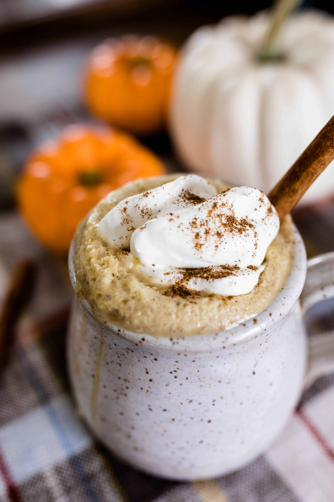

Pumpkin Spice Latte

The Warmest Cup of Pumpkin Spice Latte You'll Ever Have!
With this recipe you'll be able to spice it up however you like! Either that be adding some caramel drizzle or maybe even some fluffy cold foam. This cozy fall drink will fill you up with warmth on those chilly nights by the fire.You can also make this drink hot or cold if you like, but I would definitely reccommend hot!.
Ingredients
- 1/2 cup strong hot coffee or 2 shots of espresso
- 2 cups milk of choice, dairy or non-dairy
- 2 tablespoons pumpkin puree, or more to taste
- 1 tablespoon sugar or maple syrup, or more to taste
- 1 tablespoon vanilla extract
- 1/2 teaspoon pumpkin pie spice, plus more for serving
- whipped cream, optional for serving
Steps
- Add milk, pumpkin puree, and sugar to a saucepan over medium heat. Slowly heat the milk until hot, but do not boil.
- Remove the saucepan from the heat and whisk in the vanilla, pumpkin pie spice, and the coffee or espresso. Taste and adjust with more sugar or spices.
- Divide the mixture between two mugs.
- Top with whipped cream and a sprinkle of pumpkine spice.